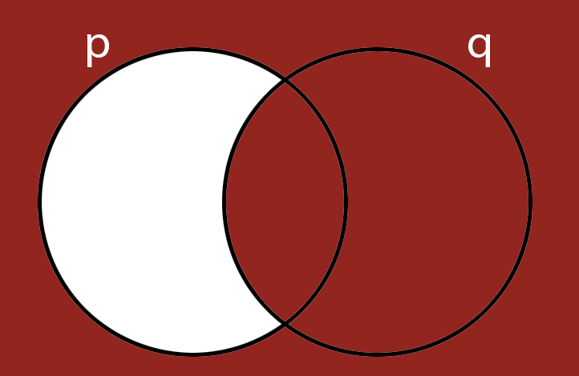

CSC 250
Theory of Computation
Smith Computer Science
Theory of Computation
Smith Computer Science
The process of obtaining a conclusion from a set of propositions taken to be true.
Ambiguity!.
Example:
If a waiter asks: "Would you like a burger or a hotdog?"
You could answer: "Yes".
Where is the linguistic issue in this exchange?
Other issues: language artifacts, like contronyms (dust, clip, fast), or
homonyms ( "Buffalo buffalo buffalo Buffalo buffalo").
The process by which we can combine propositions, in a logical computation, to obtain valid conclusions
OR
with which we can detect errors in the logical computation and refute a conclusion.
In this section we'll discuss logical operators, which are rules that indicate the resulting effect on a proposition or a set of propositions when operated upon.
The negation operator, symbol: \( \neg \), AKA NOT, is a unary operator and it refers to the opposite truth value of a proposition.
We can show the effect of this operator using a table:
| p | ¬p |
|---|---|
| True | False |
| False | True |
| p | ¬p |
|---|---|
| 1 | 0 |
| 0 | 1 |

The conjunction operator, symbol: \( \wedge \), AKA AND, is a binary operator; it is true if and only if both of its operands are true.
We can show the effect of this operator using a table:
| p | q | p∧q |
|---|---|---|
| False | False | False |
| False | True | False |
| True | False | False |
| True | True | True |
| p | q | p∧q |
|---|---|---|
| 0 | 0 | 0 |
| 0 | 1 | 0 |
| 1 | 0 | 0 |
| 1 | 1 | 1 |

The disjunction operator, symbol: \( \lor \), AKA OR is a binary operator; it is true if any of its operands is true.
We can show the effect of this operator using a table:
| p | q | p∨q |
|---|---|---|
| False | False | False |
| False | True | True |
| True | False | True |
| True | True | True |
| p | q | p∨q |
|---|---|---|
| 0 | 0 | 0 |
| 0 | 1 | 1 |
| 1 | 0 | 1 |
| 1 | 1 | 1 |
The exclusive disjunction operator, symbol: \( \nleftrightarrow \), AKA XOR is a binary operator; it is true if its operands are different.
We can show the effect of this operator using a table:
| p | q | p\( \nleftrightarrow \)q |
|---|---|---|
| False | False | False |
| False | True | True |
| True | False | True |
| True | True | False |
| p | q | p\( \nleftrightarrow \)q |
|---|---|---|
| 0 | 0 | 0 |
| 0 | 1 | 1 |
| 1 | 0 | 1 |
| 1 | 1 | 0 |
We can combine these building blocks to make arbitrarily complicated propositions:
\[ (p \wedge ¬q) \lor (\neg p \wedge q) \]
Activity 4 [2 minutes]: What is this saying?
Implication, symbol \(\rightarrow\), AKA IMPLIES, is a binary operator that states that:
IF p is true, then q must also true
We can show the effect of this operator using a table:
| p | q | p\( \rightarrow \)q |
|---|---|---|
| False | False | True |
| False | True | True |
| True | False | False |
| True | True | True |


If and only if, symbol \(\Leftrightarrow\), AKA IFF, is a binary operator that states that:
IF p is true, then q must also true, and IF q is true, then p must also true!
We can show the effect of this operator using a table:
| p | q | p\( \rightarrow \)q | p\( \leftarrow \)q | p\( \Leftrightarrow \)q |
|---|---|---|---|---|
| False | False | True | True | True |
| False | True | True | False | False |
| True | False | False | True | False |
| True | True | True | True | True |

Inference is the process of obtaining logical consequences from premises.
Let's use an example:
For some problems, holding the information in our head and making sense of it is quite hard.
Luckily, we have been building a symbolic language that can take the place of "thoughts that make sense so far" so that
we can continue doing our logical computation.
We have accumulated some symbols:
Activity 8 [4 minutes]: What can you tell about the following proposition?
\[ (p \lor q) \wedge (\neg q) \rightarrow p \]
Answer below
| p | q | p ∨ q | ¬q | (p ∨ q) ∧ (¬q) | (p ∨ q) ∧ (¬q) →p |
|---|---|---|---|---|---|
| 0 | 0 | 0 | 1 | 0 | 1 |
| 0 | 1 | 1 | 0 | 0 | 1 |
| 1 | 0 | 1 | 1 | 1 | 1 |
| 1 | 1 | 1 | 0 | 1 | 1 |
Activity 9 [1 minute]: What can you tell about the following proposition?
\[ q \lor \neg q \]
In spoken English we talk of "making a point".
We usually "grant" said point when the person has made a convincing argument or revealed an unforeseen truth.
As we mentioned before, using English leaves you exposed to ambiguity, contradictions, or language artifacts.
We can create a convincing argument using propositional logic by chaining together a series of boolean statements until we get to the desired conclusion.
Aleks, Benita, Chas, and Dora are quadruplets, and they’ve all been invited to a birthday party. Unfortunately the quadruplets don’t get along very well:
We will see a very high-level intro to three types of proofs:
To quote Wikipedia: "Deductive reasoning goes in the same direction as that of the conditionals, and links premises with conclusions. If all premises are true, the terms are clear, and the rules of deductive logic are followed, then the conclusion reached is necessarily true."
Example:
Start by assuming (taking as a true proposition) the opposite of what you wish to prove.
Follow the normal rules of propositional logic and if:
If we take an implication proposition as true, there is another proposition we can extract from it by performing some manipulations:
To obtain the contrapositive of a proposition, we:
Activity 11 [4 minutes, if we have time]:
Prove the following statement: "Theorem: For any \(n \in \mathbb{Z}\), if \(n^2\) is even, then \(n\) is even."
Activity 12 [4 minutes, if we have time]:
What is wrong with this statement:
The converse of an implication is is the result of inverting the direction of the implication, so if:
\( p \rightarrow q \)
The converse would be:
\( q \rightarrow p \)
The error would be in believing that just because an implication is true, its converse is too.
Example:
"Petting dogs makes me happy.
"I am happy, therefore I am petting a dog"
OR (Jordan's example!) "Being happy makes me pet dogs."
The inverse of an implication is is the result of inverting (negating) its propositions while maintaining the direction of the implication, so if:
\( p \rightarrow q \)
The inverse would be:
\( \neg p \rightarrow \neg q \)
The error would be in believing that just because an implication is true, its inverse is too.
Example:
"Petting dogs makes me happy.
"I am not petting a dog, therefore I must not be happy"